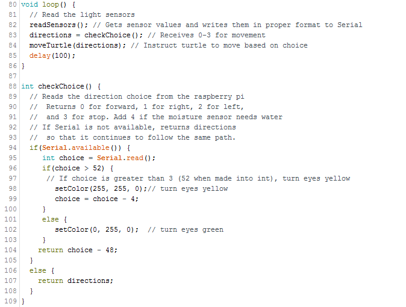

The Software Process
Sprint 1 - Moves out of shade
This first sprint was focused on making the bare bones of a first-pass model, and we decided that the heart of our system was a turtle that wanted to stay in the light. Because of this, we turned our efforts towards making sure our turtle could reliably sense a change in the light above it and respond. In order to do this, we created a basic control loop that looked at the value of two photodiodes and compared the analog voltage input to a set value. If the photodiodes reported too low, the turtle would move away from that sensor, either rolling forward or backwards. The eyes also switched on or off in response to the motion. Due to this fairly arbitrarily chosen value, the sensor needed to be thoroughly covered, such as by a hand, before it began to move, and then moved only until the sensor was fully in light. If both sensors were covered, the turtle remained still, mimicking what our final product might do if needing to cool down. It also only moved along a single axis, and was completely unaware of any surroundings forward or back.
CODE SNIPPET: Sensor checking and bare-bones decision algorithm
Sketch code focused on staying in light:
- Used 2 photodiodes to detect light or shadow above
- Calibration of these sensors tuned by hand, set to single value
- Controlled wheel motors to move along a single axis
- Moved until both sensors reported values above calibration value
- Basic eye LED control
Some issues:
- Did not move if both sensors reported shade
- 1-axis movement
- No awareness of surroundings
Sprint 2 - Turning and multiplexer
Starting the second sprint, we started on basic obstacle avoidance. Afterall, a turtle that runs into every wall it can when trying to escape the dark wouldn’t really work. However, we quickly ran into issues with finding analog pins that could be used to read the sensors and were not already assigned to another task on the motor shield. We started by using only two IR sensors in combination with the photodiodes, which was just few enough sensors to fit. Using these sensors, we took the code through a basic decision algorithm, where ‘seeing something’ meant that the IR sensor returned a voltage above a set value. We also normalized the IR values, so that the numbers were smaller. To be frank, this was rather pointless, but it was there nonetheless.
The decision algorithm was as follows:
- If shade in front, move backwards
- If shade over back sensor, check forward IR
- If nothing in front, go forward
- If something in front, check right IR
- If nothing to right, turn right
- If something to right, turn left
CODE SNIPPET: Checking IRs for which direction is acceptable. Contains the later discarded normalization.
We didn’t quite manage to combine this algorithm with the movement of the legs that the mechanical team made, although control code to move the servo-based legs was written. Instead, this time was spent struggling with the pins on the motor shield. Due to the difficulties there, we switched to using a multiplexer to cycle through sensors, and wrote basic code to switch between which pins on the multiplexer were being read.
CODE SNIPPET: method used to select a pin from the IR sensor.
We then included IR sensors to check forward and to the right whenever the turtle has to move
- IR sensors normalized, which was sort of useless
- Motion undergoes a decision algorithm:
- If shade in front, move backwards
- If shade over back sensor, check forward IR
- If nothing in front, go forward
- If something in front, check right IR
- If nothing to right, turn right
- If something to right, turn left
- Only moves if shade over part
- Pins starting to run low, particularly with motor shield interference, so added a multiplexer
- Function to choose the pin being looked at
Mechanical subteam wrote up control code for leg movemen; integration from wheel to leg is not yet completed.
Sprint 3 - Integration
This sprint was broken into pieces by Thanksgiving break. During the first part, we integrated the movement code from the previous sprint with the decision algorithm, as well as wrote code to allow for easy testing of sensors. After the break was done, we made a quick pivot from a purely Arduino based system to communication between a Raspberry Pi and the Arduino. This was in order to facilitate future development, such as a more intelligent decision algorithm and incorporate web-streaming of the data.
One of the other main changes was switching from only moving when one of the sensors registered shade to constant motion, and both the photodiodes and the IR sensors became self-calibrating, which meant we had to assume the turtle was started up in ideal circumstances for that initial read. Data was logged to a CSV, and the turtle no longer moved backwards, due to realism and the linkages of the legs.
Code for a temperature sensor and a soil moisture sensor were also added, with a ‘seeking shade’ setting that looks for shade to rest in, but these were not tied to actual sensors.
CODE SNIPPET: Raspberry Pi main loop, which sends directions to Serial
CODE SNIPPET: Arduino control sequence, writing to and receiving directions from serial/Raspberry Pi
- Combined leg control with previous movement control loop
- Constant movement except under certain conditions
- Sensor testing script written (unused)
- Added Raspberry Pi for easier data processing
- Raspberry Pi processes, sends data back to Arduino; Arduino controls movement
- Logging of sensor values to CSV added
- Light and IR sensors self-calibrating
- Turtle no longer moves backwards
- Code for moisture sensor and temperature sensor incorporated, sensors not attached
Sprint 4 - Clean up
This sprint was largely focused on making the mechanical and aesthetic sides of the turtle the best they could be. Due to this, there was little change in the software. One decision was that the turtle would self-calibrate its sensors, assuming that it started in ideal conditions. We also added RGB LED control for the eyes, so that we could be alerted if the moisture in the soil got too low.
- Decided turtle would calibrate by starting in desired conditions and taking readings from sensors
- Added RGB LED control